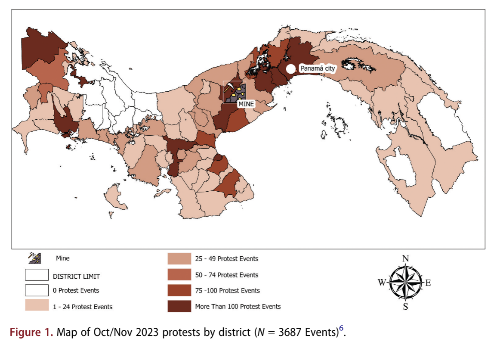
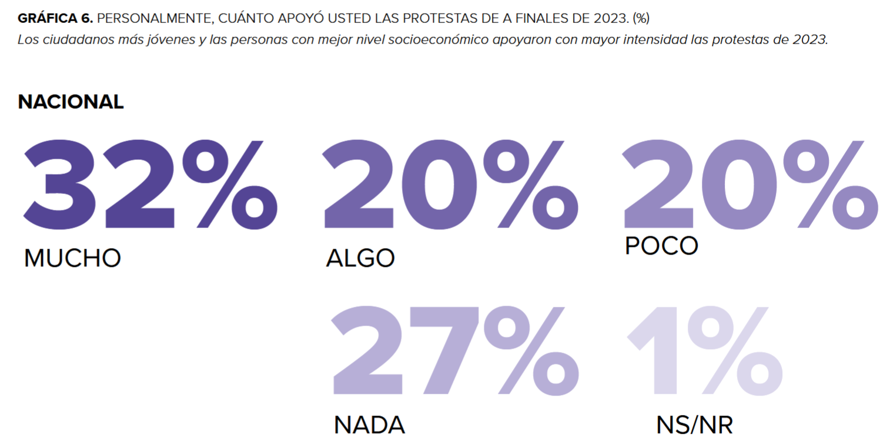
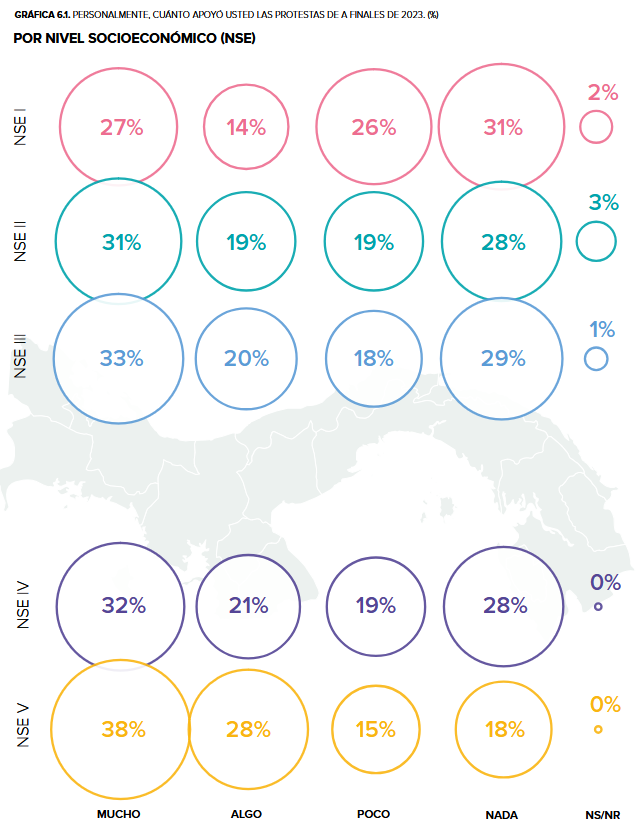
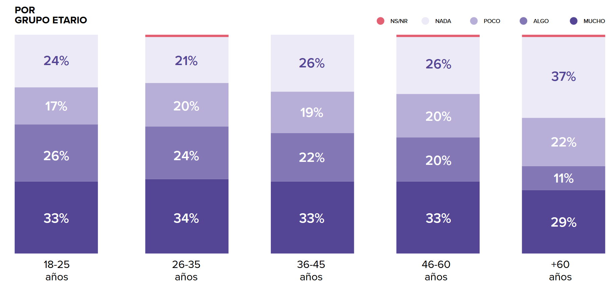
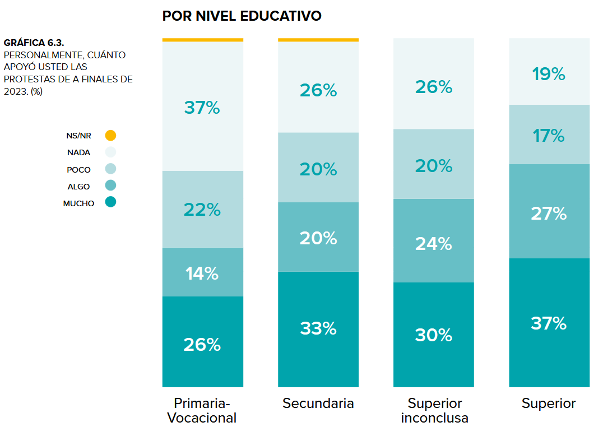
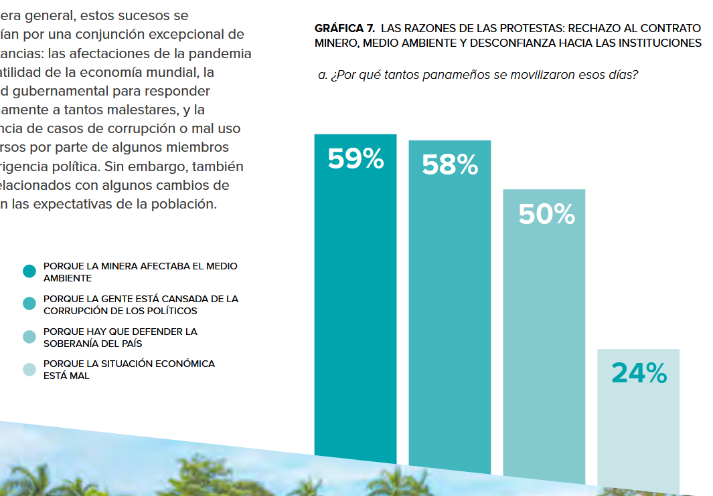
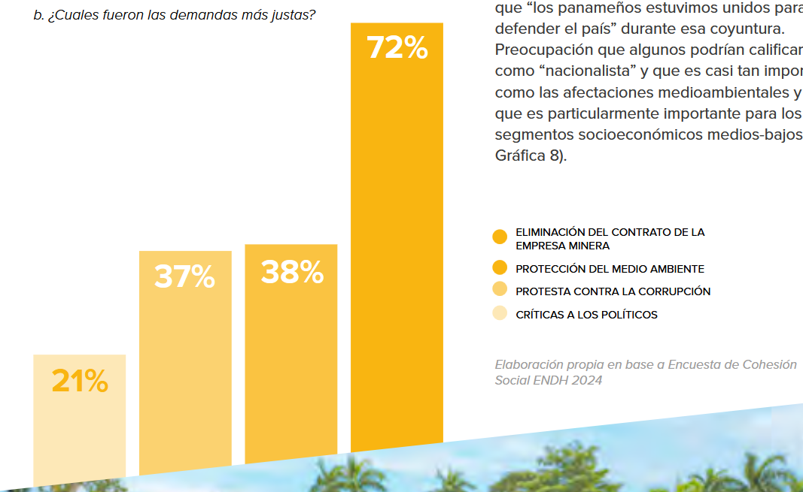
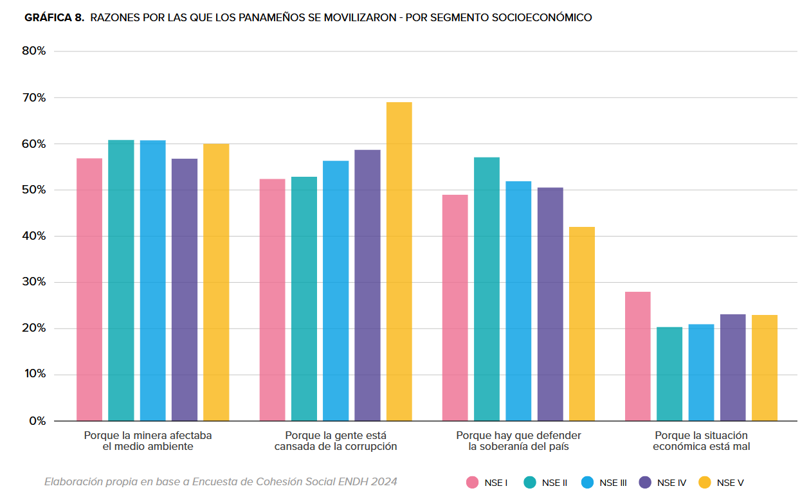

Diecinueve preguntas sobre la revuelta considerada en conjunto, más allá de la cronología.
Según Díaz Pinzón & Almeida (2025), entre el 20 de Octubre y el 28 de Noviembre del 2023 hubo 3687 protestas en las 10 provincias y la mayoría de los 75 distritos administrativos del país (y las tres comarcas indígenas). La zona metropolitana, la región central, la frontera y la costa norte fueron las regiones más afectadas. Ahí se encuentran ciudades como la Ciudad de Panamá (capital), La Chorrera, Arraiján, David, Changuinola, Santiago, Penonomé y Donoso, las cuales sufrieron un agudo desabastecimiento logístico, de alimentos y energético producto de los cierres viales. Asimismo, según la Defensoría del Pueblo de la República de Panamá (2023a), hubo 279 cierres de rutas a nivel nacional: 239 cierres totales y 40 parciales. Todo ello afectó a más de 700 000 estudiantes de centros educativos públicos, debido al paro magisterial. Por último, el conflicto llegó con gran intensidad a las áreas rurales y agrícolas, donde comunidades campesinas, pequeños productores y pueblos originarios (como los Ngäbe Buglé y los Emberá-Wounaan) sostuvieron férreos bloqueos en puntos estratégicos de la vía Interamericana en zonas como San Félix, Horconcitos y Tierras Altas, sumados a la resistencia territorial de los pescadores y pobladores de áreas costeras rurales en Donoso, quienes ejecutaron inéditos bloqueos marítimos para detener las operaciones de la mina.

No se encontró información al respecto.
Las protestas de 2023 se destacaron por su gran transversalidad social, logrando aglutinar a jóvenes, sectores educados y clases medias. Esta ola de manifestaciones transformó las dinámicas tradicionales de protesta sindical, apoyándose fuertemente en redes sociales, espacios universitarios y organizaciones locales para su convocatoria. Sin embargo, la inmensa heterogeneidad de los participantes —que combinaba a unos pocos grupos con agendas ideológicas definidas frente a una gran mayoría movilizada por indignaciones coyunturales, como la economía o la protección ecológica— impidió consolidar una representación unitaria. Esta fragmentación no solo complicó las mesas de diálogo y la resolución del conflicto, sino que también imposibilitó que la exitosa articulación del descontento ciudadano se lograra canalizar institucionalmente hacia la formulación de proyectos políticos alternativos a largo plazo (PNUD, 2024).
Un grupo de lancheros de la comunidad de Donoso, conocidos popularmente como "Los Guerreros del Mar", protagonizó una resistencia pacífica e ininterrumpida frente al puerto minero de Punta Rincón. Mediante el uso de sus pequeñas embarcaciones, estos pescadores se enfrentaron desarmados a las unidades del Servicio Nacional Aeronaval, logrando impedir el ingreso de buques con carbón y la exportación de minerales, lo que paralizó las operaciones de la empresa. Estas acciones se transmitieron las 24 horas por redes sociales, lo que permitió documentar en tiempo real la represión ejercida por las autoridades, quienes lanzaron gases lacrimógenos desde barcazas oficiales hacia los botes pesqueros. Esta movilización logró sostenerse gracias a la fuerte organización comunitaria y a las donaciones económicas ciudadanas recibidas mediante la aplicación Yappy, perteneciente al Banco General (FUNDICCEP & Red Nacional en Defensa del Agua Panamá, 2024).
Sindicato Único Nacional de Trabajadores de la Industria de la Construcción y Similares (Suntracs): Es la organización gremial más grande y con mayor capacidad de movilización en Panamá. Fundado en la década de 1970, este sindicato no solo se dedica a negociar convenciones colectivas y defender los derechos de los obreros frente a las empresas constructoras, sino que históricamente ha jugado un papel protagónico en las principales luchas sociales y económicas del país. El suntracs actuó de manera constante a lo largo de todo el conflicto, encabezando marchas urbanas masivas, enfrentamientos directos con las autoridades y promoviendo la mayoría de los bloqueos viales estratégicos diariamente tanto en la ciudad capital como en diversas provincias del interior. El Suntracs articulo a la clase obrera y a los trabajadores de la construcción, quienes frecuentemente estuvieron acompañados y apoyados en las calles por grupos estudiantiles, universitarios y movimientos originarios, marcando un ritmo incesante de presión social.
Gremios Magisteriales y Docentes (destacando Asoprof y Aeve): Estas agrupaciones profesionales preexistentes asumieron un rol de liderazgo fundamental al decretar y sostener una huelga nacional indefinida que paralizó por completo el sistema educativo público del país. Acompañados y apoyados constantemente por estudiantes universitarios, colegiales y padres de familia, los educadores lideraron fuertes bloqueos en vías cruciales y ejecutaron intensas movilizaciones en el interior, con especial fuerza en provincias como Veraguas, Chiriquí y Colón. Su participación combativa fue constante y determinante, siendo de hecho los últimos grupos en desmovilizarse formalmente, levantando la huelga el 2 de diciembre de 2023 tras lograr un acuerdo con el Ministerio de Educación que fue catalizado por el fallo de inconstitucionalidad de la Corte Suprema.
Red "Panamá Vale Más Sin Minería" (PVMSM): Se consolidó como una red articuladora de carácter emergente, creada recientemente en 2021 en respuesta al renovado impulso extractivista del gobierno. Logró agrupar bajo su paraguas a actores preexistentes muy diversos, incluyendo a históricas organizaciones indígenas, colectivos ambientales y agrupaciones sindicales. Su presencia fue constante a lo largo del tiempo, proporcionando la infraestructura organizativa que preparó el terreno para el estallido y liderando tácticas de resistencia sostenida, como la instalación de vigilias ciudadanas permanentes frente a la Corte Suprema de Justicia a la espera de una resolución jurídica contra la mina.
Alianza Pueblo Unido por la Vida: Se trató de un frente multisectorial preexistente que se había forjado y consolidado durante las históricas y masivas protestas por el alto costo de vida a mediados de 2022. Durante la revuelta de 2023, lideraron la coordinación política y representaron formalmente las demandas de amplios sectores sociales, asociando e integrando bajo su plataforma a sindicatos obreros, personal de salud, educadores, pueblos indígenas, agricultores y ciudadanos de a pie. Tuvieron una participación constante y de alto nivel político, encargándose de plantear exigencias directas al Poder Ejecutivo (como la demanda de anular la ley vía Asamblea Nacional) y de coordinar decisiones a nivel territorial, como delegar en las bases locales la responsabilidad de abrir o mantener cerrados los corredores humanitarios.
La revuelta urbana de 2023 en Panamá fue mayormente organizada “desde abajo”, impulsada por una heterogénea coalición de movimientos sociales, gremios profesionales, pueblos originarios y diversas organizaciones de la sociedad civil. Lejos de ser un estallido espontáneo, la movilización fue el resultado de años de preparación organizativa y resistencia social acumulada, cimentada en experiencias tácticas previas como las protestas indígenas antimineras de 2009-2012 y el levantamiento popular por el costo de vida en 2022. Esta articulación ciudadana contrastó con la inacción "desde arriba", ya que los partidos políticos de oposición, como Cambio Democrático (CD) y el Partido Panameñista (PAN), demostraron una total incapacidad para ejercer un contrapeso efectivo y mantuvieron una actitud pasiva, lo que reforzó la percepción ciudadana de que la clase política era cómplice de las políticas gubernamentales.
Una de las consignas de la revuelta fue “El oro de Panamá es verde” (Subinas & Martí i Puig, 2023). La sociedad civil panameña ha desarrollado una transversal conciencia ecológica, priorizando la defensa del medio ambiente sobre el crecimiento económico. Esta sensibilidad —motor de las principales protestas desde 2009— chocó fuertemente con la realidad del megaproyecto minero del 2023 que, operando aislado y de espaldas al país, deforestó miles de hectáreas de gran biodiversidad y consumió volúmenes masivos de agua. Este enorme daño ambiental resultó aún más inaceptable al coincidir con los embates del fenómeno de El Niño en 2023, el cual provocó el año más seco en los registros históricos de Panamá y encendió las alarmas sobre el uso de los recursos naturales. La extrema escasez de lluvias desató una crisis hídrica a nivel nacional que encareció la generación de energía, multiplicó los severos cortes de agua potable en las comunidades y obligó al Canal de Panamá a restringir el tránsito de buques, mermando gravemente sus operaciones. En medio de esta sequía, la renovación del contrato minero se transformó en un conflicto directo por las cuencas hidrográficas: mientras los ciudadanos sufrían desabastecimiento en sus hogares, se le garantizaba un uso intensivo de agua dulce a una industria impopular. Esta situación consolidó en la población el sentimiento de que las élites políticas y económicas estaban traicionando el principal activo e hito histórico del país, priorizando los intereses de la mina por encima de las fuentes hídricas que el Canal necesita con urgencia para asegurar su viabilidad futura (Nevache, 2024).
Otras de las consignas de la revuelta fueron “Patria te quiero verde no vendida” y “Este país es mi vida y por mi vida lucharé hasta el final. Te amo Panamá” (FUNDICCEP & Red Nacional en Defensa del Agua Panamá, 2024). La identidad política de Panamá está profundamente arraigada en su histórica lucha por recuperar la soberanía sobre la Zona del Canal, un enclave estadounidense que desde 1903 dividió al país y operó bajo un sistema de segregación. El esfuerzo de décadas para desmantelar esta presencia extranjera —inmortalizado en hitos como la gesta del 9 de enero de 1964 y la firma de los Tratados Torrijos-Carter— consolidó una fuerte conciencia nacional y un discurso patriótico que sigue muy vivo en el imaginario colectivo. Para los panameños, la defensa de su territorio es una conquista histórica sagrada que se reactiva de inmediato ante cualquier percepción de amenaza a su autonomía. En este contexto tan sensible, el reciente contrato a 40 años firmado con la empresa minera First Quantum Minerals fue repudiado al ser percibido por la ciudadanía como la inaceptable reinstauración de un enclave extranjero. El acuerdo otorgaba a la compañía privilegios desproporcionados, como la facultad de restringir el espacio aéreo, expropiar tierras, construir puertos, aeropuertos e hidroeléctricas, todo acompañado de enormes beneficios fiscales y bajas regalías para el Estado. Esta desequilibrada cesión de poder y recursos provocó la indignación generalizada de ambientalistas, sindicatos y la sociedad civil, quienes denunciaron el pacto como una grave vulneración a la soberanía nacional, resucitando así las históricas luchas patrióticas del siglo XX. Esta narrativa fue finalmente consolidada el 28 de Noviembre del 2023, Día de la Independencia de Panamá y cuando finalmente la Corte Suprema de Justicia decretó la inconstitucionalidad del contrato con la empresa minera (Nevache, 2024).
El profundo rechazo ciudadano hacia el contrato minero se fundamenta en la percepción generalizada de que el proceso estuvo marcado por la corrupción y graves irregularidades institucionales. La indignación social se agravó al observar cómo la Corte Suprema de Justicia dilató durante nueve años su fallo de inconstitucionalidad y tardó cuatro años más en publicarlo, un retraso estratégico que le garantizó a la empresa el tiempo y la libertad para seguir operando sin restricciones legales. Esta impunidad parece estar estrechamente vinculada a la práctica de "puertas giratorias", evidenciada en el hecho de que figuras clave como un expresidente de la Corte pasaron a formar parte de la junta directiva de Minera Panamá, y que socios de la firma legal defensora de la minera actuaban simultáneamente como magistrados suplentes. Por otro lado, la red de nepotismo y favoritismo se extiende hasta los más altos niveles del Órgano Ejecutivo, donde existen evidentes conflictos de intereses entre miembros del gobierno actual y el proyecto extractivo. Funcionarios de primera línea mantienen vínculos directos con el negocio: desde el vicepresidente, quien fungió como representante legal de una antigua concesionaria, hasta ministros cuyas empresas familiares han cerrado contratos millonarios de construcción con la minera tras su llegada al poder. Este entramado se consolida al descubrir que el equipo negociador de la empresa minera incluía a familiares directos de estos mismos funcionarios, y que el propio ministro responsable de defender el acuerdo comercial es socio de una firma de abogados históricamente vinculada a la redacción del contrato original y a sus corporaciones internacionales afiliadas (Nevache, 2024).
La revuelta urbana de 2023 fue disruptiva y combinó multitudinarias tácticas pacíficas con fuertes episodios de violencia. La movilización se caracterizó por una articulación estratégica de diversas acciones: marchas pacíficas donde se cantaba el himno, vigilias ciudadanas y un intenso activismo digital en redes sociales, las cuales se entrelazaron con tácticas altamente perjudiciales para la logística del país, como cierres de avenidas, cortes férreos en la vía Interamericana e inéditos bloqueos marítimos en Puerto Rincón. Asimismo, la paralización del país se sostuvo a través del cese de labores, destacando una huelga nacional docente indefinida que se extendió desde el 23 de octubre hasta el 2 de diciembre, una huelga bananera indefinida liderada por el sindicato Sitraibana, y al menos dos intentos de paro nacional multisectorial convocados para el 14 y el 16 de noviembre, aunque este último tuvo un débil acatamiento. Aunque grandes bloques ciudadanos protestaron de forma cívica, la conflictividad escaló repetidamente a niveles violentos, evidenciados en duros enfrentamientos policiales, vandalismo, quema de vehículos estatales, saqueos e incluso el trágico asesinato de manifestantes a manos de conductores y civiles armados en los puntos de bloqueo. La intensidad y el tipo de tácticas variaron significativamente en el tiempo y entre regiones. A nivel territorial, la Ciudad de Panamá fue el escenario principal de las marchas multitudinarias en la Cinta Costera y las vigilias institucionales frente a la Corte Suprema de Justicia, mientras que el interior del país, particularmente Chiriquí, Veraguas, Bocas del Toro y áreas costeras de Donoso, concentró los bloqueos viales más radicales y prolongados, generando severas crisis de desabastecimiento de alimentos, gas y medicamentos. Temporalmente, la dinámica de la revuelta también se transformó: durante las primeras dos semanas (finales de octubre e inicios de noviembre) primaron las marchas masivas, enfrentamientos y cierres transversales en todo el país; sin embargo, tras la sanción de la ley de moratoria minera a inicios de noviembre, la tensión urbana disminuyó parcialmente, aunque se mantuvieron los bloqueos de rutas. Hubo cierta división en los grupos organizados entre quienes buscaron que el Poder Ejecutivo y Legislativo deroguen la ley 406, y los que se enfocaron en mantener vigilias pacíficas a la espera de un fallo judicial.
Según Díaz Pinzón & Almeida, p. (2025, p. 5), “la música reguetón, con canciones como «Panamá No Se Vende» y «Que se Preparen» (del fallecido artista Danger Man), animó a la juventud urbana que protestaba en las calles”. "Que Se Preparen" es una clásica "tiradera", una canción dirigida a otros músicos rivales para establecer jerarquía y respeto dentro de la industria musical. Es una canción del 2005 de uno de los raperos más influyentes de Panamá, fallecido en 2008. En cambio, "Panamá No Se Vende" es una canción de protesta nacida directamente en la revuelta del 2023, denunciando la corrupción gubernamental, la represión policial y la explotación de los recursos naturales. El título “Panamá No Se Vende” es usado como arenga en manifestaciones al menos desde el 2010 (Batista & Cerrud, 2010). Ambas canciones comparten una fuerte raíz urbana panameña y un tono marcadamente desafiante y agresivo. Los dos temas utilizan un lenguaje crudo y beligerante para hablar de una "guerra" inminente, proyectando una actitud de valentía inquebrantable. En sus respectivas letras, los artistas se muestran dispuestos a ir "de frente" y defienden su posición con hostilidad y negándose a retroceder. La dimensión contestataria de ambas canciones tiene relación con las raíces de la música urbana panameña. Históricamente, el reguetón y el reggae en español surgieron en los barrios marginados de Panamá como una voz de resistencia de las comunidades afrocaribeñas —descendientes de los trabajadores del Canal— frente a la segregación sistémica, las políticas de exclusión y la brutalidad policial que imperaban en la Zona del Canal controlada por Estados Unidos. Desde sus inicios, pioneros del género utilizaron el ritmo para la denuncia social. En este sentido, la beligerancia de las canciones conecta con el sentido original de un movimiento que, mucho antes de experimentar la industrialización y fama, nació como un mecanismo de solidaridad comunitaria para exigir justicia (Ávila, 2023; Cepeda, 2018; Frizzell, 2026).
La canción «Despierta», del cantautor panameño Alejandro Lagrotta en colaboración con el cantante Kafu Banton, fue un himno de la revuelta en Panamá debido a su mensaje contra el clientelismo político y la compra de votos. Aunque el tema se lanzó meses antes de las manifestaciones, su letra resonó con fuerza al denunciar la práctica de ofrecer prebendas —como jamones o tanques de gas— en periodos electorales, invitando a la ciudadanía a no seguir apoyando un sistema corrupto (Crespo, 2023). Esta canción de estilo latín pop y ritmos autóctonos también retoma la vocación histórica de la música popular panameña como una herramienta de resistencia y cohesión.
“El himno «Patria» del salsero panameño Rubén Blades también unificó a las clases sociales y a los grupos de oposición durante la campaña” (Díaz Pinzón & Almeida, 2025, p. 5). Tradicionalmente la salsa de Blades fue un vehículo para expresar el latinoamericanismo y el antiimperialismo en el contexto de la Guerra Fría (Pimentel-Otero, 2016). Por ejemplo, Blades criticó fuertemente las políticas exteriores de Estados Unidos influenciado por experiencias como la presencia neocolonial en la Zona del Canal de Panamá. Particularmente la canción “Patria” fue lanzada originalmente en 1988 dentro del álbum Antecedente, mientras el cantautor residía fuera de Panamá. Blades compuso el tema como un intento de explicarle a un niño —inspirado en su hermano menor— el significado de la palabra patria. Para lograrlo, construyo una letra donde el sentido de pertenencia se define a través de imágenes cotidianas, el recuerdo vivo de los barrios, el sacrificio de los mártires y el afecto humano. Con el paso de las décadas, la canción trascendió su propósito inicial para consolidarse como un segundo himno nacional de facto para los panameños, resonando tanto en las gradas de los eventos deportivos como en las calles. Las protestas por el medio ambiente no fueron la excepción (Batista & Cerrud, 2010). Sin embargo, el propio Blades cuestionó las intenciones detrás de las movilizaciones del 2023, señalando que algunos sectores actuaron impulsados por el protagonismo político-electoral o por motivaciones monetarias en lugar de una verdadera preocupación ambiental. En su perspectiva, la lucha no debió limitarse únicamente a rechazar la minera, sino que debió apuntar a desmantelar todo el sistema político corrupto apoyando a alternativas independientes en las urnas (Blades, 2023).
Todas estas canciones también pudieron haber resonado porque el contrato minero fue percibido como una amenaza a la soberanía nacional. Por ejemplo, el contrato tuvo cláusulas que amenazaban las tierras de los pequeños propietarios cercanos a la mina. La empresa hubiera tenido el poder de expropiar tierras aledañas no incluidas en la concesión y de desviar ríos enteros para sus propios fines; lo que recordaba al control estadounidense sobre el Canal de Panamá. Esto explica algunas de las consignas nacionalistas de la protesta, que evocaban el anticolonialismo de mediados del siglo XX, a pesar de que los jóvenes manifestantes no vivieron estas experiencias (Bonilla, 2023).
No hubo información al respecto.
Las respuestas discursivas del gobierno y de las autoridades frente a la revuelta fueron inicialmente hostiles y defensivas, priorizando la justificación económica del proyecto minero y deslegitimando las tácticas de protesta ciudadana. En un primer momento, el presidente Laurentino Cortizo y el Ministerio de Comercio e Industrias defendieron férreamente la recién sancionada Ley 406, presentándola ante la opinión pública como un gran logro de conciliación que le haría "justicia a Panamá" al garantizar millonarios ingresos para jubilados y salvaguardar miles de empleos. Frente a los masivos bloqueos, el discurso oficial se tornó rápidamente confrontacional: el mandatario emitió mensajes acusando a los manifestantes de perturbar la tranquilidad, impedir el trabajo y poner en riesgo la atención médica de la población. En paralelo, la Policía Nacional y otras instancias estatales -en sintonía con los discursos de los gremios empresariales- criminalizaron las movilizaciones enfatizando los daños económicos, el vandalismo y advirtiendo sobre el uso de la "fuerza necesaria" para reabrir las vías. Sin embargo, el discurso de las autoridades cambió significativamente con el paso de las semanas, transitando de la imposición intransigente a la concesión forzada y, finalmente, a la evasión de responsabilidades. A medida que la movilización logró paralizar por completo la logística del país y desató una crisis de desabastecimiento, el Ejecutivo intentó apaciguar el descontento cambiando su tono para ofrecer medidas paliativas, proponiendo primero un decreto de moratoria minera, luego la derogación de la ley 406 vía trámite legislativo y posteriormente una consulta popular vinculante, alternativas que fueron rotundamente rechazadas por los manifestantes, los juristas y el Tribunal Electoral. Al constatar que la presión popular no cedía y ante los fuertes reclamos de inacción por parte de los gremios empresariales, el gobierno y la Asamblea Nacional adoptaron una postura de repliegue, promulgando la Ley 407 (moratoria indefinida) y exhortando a la ciudadanía a abandonar las calles para esperar y respetar el dictamen de la Corte Suprema de Justicia. Esta evolución discursiva evidenció la extrema debilidad política de una administración errática y sin legitimidad popular —cuya aprobación presidencial caería hasta un 12%—, la cual se vio acorralada y terminó acatando el fallo de inconstitucionalidad como la única salida viable a la crisis.
Tomando en consideración que la revuelta duró 7 semanas, y que varias partes del país estuvieron desabastecidas por alrededor de un mes por bloques viales permanentes, la represión policial fue moderada. Las autoridades justificaron sus acciones bajo el protocolo de liberar las vías públicas y frenar el vandalismo, y hubo cierta represión selectiva evidenciada en la aprehensión temporal de cientos de personas (incluyendo líderes sociales y presuntos vándalos). Aunque las fuentes no reportan la ejecución de protocolos de espionaje o vigilancia secreta orientada directamente a las protestas, el nivel de agresión estatal motivó profundas quejas y denuncias ciudadanas canalizadas por la Defensoría del Pueblo y la CIDH. Finalmente, la policía no ejecutó asesinatos masivos, pero sí se registraron incidentes trágicos que cobraron la vida de al menos cuatro manifestantes; estas muertes fueron perpetradas por terceros civiles, como conductores que arrollaron intencionalmente a pobladores en los bloqueos o un individuo armado que mató a tiros a dos educadores, agresores que fueron inmediatamente arrestados por las fuerzas policiales presentes.
Según la Defensoría del Pueblo (2023a), hubo 471 detenidos y 74 detenidas mayores de edad, así como 15 detenidos NNA. Abogados y testigos denunciaron múltiples irregularidades en los debidos procesos, como la negación del acceso inmediato a defensa legal o a llamadas telefónicas. Como resultado de estas fallas, muchas detenciones fueron declaradas ilegales por los jueces o culminaron con la liberación de los individuos horas o días después al no poderles comprobar ningún delito. Las víctimas de estos arrestos arbitrarios fueron principalmente jóvenes, campesinos e indígenas, e incluyeron tanto a manifestantes como a transeúntes ajenos a las protestas que simplemente pasaban por el lugar. Asimismo, se documentaron abusos contra personas no relacionadas a las manifestaciones, destacando el caso de un pescador en Punta Rincón que fue atacado con gas pimienta y balas de goma mientras trabajaba solo en su bote; le confiscaron la embarcación y lo mantuvieron esposado en el área de la mina por más de 24 horas, sin ponerlo a disposición de las autoridades, hasta que un juez de garantías declaró ilegal su arresto (FUNDICCEP & Red Nacional en Defensa del Agua Panamá, 2024).
Hasta noviembre de 2023, el Ministerio Público panameño había abierto 175 investigaciones y ordenado la detención de 60 personas por diversos delitos presuntamente cometidos durante las protestas antimineras, logrando 13 condenas en un corto periodo. Entre los judicializados destacan tres casos específicos en la provincia de Colón que quedaron bajo medidas cautelares de firma quincenal: el lanchero Sabino Ayarza, acusado de embestir una embarcación policial; el pescador Eduardo Baltazar, cuyo arresto fue declarado ilegal por ocurrir mientras trabajaba; y Juan Arroyo, quien fue sacado a golpes del interior de su casa sin una orden de allanamiento. A este escenario punitivo se suman los procesos penales abiertos contra líderes sindicales del Suntracs y una investigación estatal dirigida hacia las cuentas de dicha organización. Por otro lado, en la provincia de Chiriquí, la Cámara de Turismo, Comercio e Industrias de Tierras Altas interpuso una querella penal contra 21 personas por delitos como terrorismo, daños a la seguridad colectiva y asociación ilícita, exigiendo además un pago de 50 millones de dólares en compensación. Esta demanda fue admitida rápidamente e incluyó a ambientalistas, pequeños productores y comunicadores, varios de los cuales ni siquiera participaron en los bloqueos o se limitaron a documentar los eventos. La exposición pública de los rostros y nombres de los querellados, realizada antes de que se admitiera legalmente la demanda, vulneró su presunción de inocencia y desencadenó una grave estigmatización que ha resultado en amenazas, afectaciones a su sustento económico e incidentes directos de acoso (FUNDICCEP & Red Nacional en Defensa del Agua Panamá, 2024).
No hay registro de la declaratoria de toques de queda, ley marcial o estados de sitio, pues el gobierno intentó controlar la crisis apelando a la represión policial directa primero, luego al desgaste de los recursos de las organizaciones y finalmente solo quedó esperar la decisión de la Corte Suprema de Justicia.
La Defensoría del Pueblo (2023a) documentó cinco personas fallecidas y más de un centenar de heridos en todo el país. Entre las víctimas fatales se reportaron dos atropellados en Colón y Chiriquí, una migrante que perdió la vida por agotamiento físico en esta última provincia, y dos manifestantes asesinados a tiros por un civil en Chame. Por otro lado, la gran mayoría de los lesionados —grupo que incluyó a ocho agentes policiales— requirieron asistencia médica por afectaciones respiratorias y cutáneas causadas por los gases lacrimógenos. Adicionalmente, el impacto de perdigones y balas de pimienta dejó graves secuelas físicas, provocando que cinco personas, entre ellas dos menores de edad, perdieran la mitad de su capacidad visual.
Dos de los manifestantes perdieron la vida al ser atropellados en los puntos de bloqueo. Agustín Morales murió el 26 de octubre de 2023 en Buena Vista, provincia de Colón, a manos de un conductor que no fue detenido y que solo cumple con la medida cautelar de firmar los días 15 y 30 de cada mes. Posteriormente, el 1 de noviembre, el docente indígena Tomás Milton Cedeño García falleció en Horconcitos, Chiriquí, cuando un ciudadano checo intentó cruzar a la fuerza un cierre en la vía Panamericana, dándose a la fuga antes de ser capturado metros más adelante. Las otras dos muertes ocurrieron el 7 de noviembre en un cierre de la vía Panamericana a la altura de Chame, en la provincia de Panamá Oeste. Allí, el docente Abdiel Díaz e Iván Rodríguez, esposo de una maestra, fueron asesinados a tiros a quemarropa por Kenneth Darlington, un ciudadano panameño-estadounidense de 77 años que se bajó de su automóvil y les disparó tras un breve intercambio de palabras. El acusado fue detenido y puesto a disposición del Ministerio Público para ser investigado por delitos contra la vida e integridad personal (FUNDICCEP & Red Nacional en Defensa del Agua Panamá, 2024).
Aunque las cifras oficiales de la Defensoría del Pueblo reportaron más de 100 personas heridas, la magnitud de las protestas y los testimonios recopilados sugieren que el número real de víctimas fue significativamente mayor. Durante los enfrentamientos a nivel nacional, la policía utilizó balas reales, perdigones de goma, toletes y gases, lo que dejó a múltiples manifestantes y activistas ambientales con lesiones. La represión fue particularmente violenta en diversos puntos del país, como en Santiago de Veraguas, donde una fuerte arremetida policial a finales de octubre dejó al menos 30 adultos heridos y tres menores con lesiones de extrema gravedad. Ante la negativa de algunos centros de salud para atender a los manifestantes lesionados, médicos voluntarios, jóvenes y grupos originarios tuvieron que organizar brigadas de primeros auxilios directamente en los puntos de protesta. Escenarios similares de violencia, desmayos por gases y heridos por perdigones y balas de goma se replicaron masivamente en la provincia de Colón contra los lancheros, así como en los alrededores de la Asamblea Nacional, la Universidad de Panamá, Chiriquí y otras rutas clave a nivel nacional (FUNDICCEP & Red Nacional en Defensa del Agua Panamá, 2024).
Los partidos políticos carecieron de un rol protagónico u organizativo a favor de la revuelta ciudadana, siendo percibidos en su conjunto como los antagonistas y cómplices de la crisis que detonó el conflicto. Mientras que el oficialista Partido Revolucionario Democrático (PRD) fue el blanco directo de la indignación popular —llegando los manifestantes a protestar en su sede tildándolos de dictadura— por haber impuesto y promulgado de manera exprés la Ley 406 en medio de fuertes sospechas de sobornos legislativos, las principales fuerzas de oposición, como Cambio Democrático (CD) y el Partido Panameñista (PAN), no se diferenciaron significativamente de este actuar; no se plegaron a los manifestantes ni los alentaron, sino que mantuvieron una actitud pasiva, distante y totalmente incapaz de ejercer un contrapeso efectivo. La clase política en general intentó justificar la minería o deslegitimar los cierres viales inicialmente. Sin embargo, ante el insostenible nivel de presión en las calles, los partidos se vieron obligados a forjar acuerdos interpartidarios de contención en el Órgano Legislativo: las distintas bancadas lograron un consenso con una abrumadora mayoría de 63 votos para aprobar una moratoria minera indefinida a nivel nacional y delegar en la Corte Suprema de Justicia la responsabilidad final de anular el contrato, buscando así una salida institucional para apaciguar la revuelta.
No hubo mucha información acerca de este punto. En el ámbito internacional, organismos como la Comisión Interamericana de Derechos Humanos (CIDH), la Oficina del Alto Comisionado de las Naciones Unidas para los Derechos Humanos (OACNUDH) y la Red Eclesial Ecológica Mesoamericana otorgaron una legitimidad al movimiento al condenar públicamente el uso excesivo de la fuerza policial, exigir al Estado panameño el respeto irrestricto al derecho a la protesta pacífica y criticar la falta de consultas ciudadanas exigidas por acuerdos internacionales. A nivel nacional, la Universidad de Panamá se consolidó como un aliado institucional y organizativo fundamental, no solo al suspender clases preventivamente para viabilizar la movilización ciudadana, sino también al aportar recursos jurídicos presentando demandas formales de inconstitucionalidad contra la concesión ante la Corte Suprema y ofreciendo su recinto como facilitador para un diálogo nacional. Finalmente, la posición del cantante Rubén Blades fue ambigua -aunque su canción Patria se escuchó constantemente en las manifestaciones- al señalar que, aunque personalmente está en contra de la minería a cielo abierto, algunos sectores de manifestantes actuaron impulsados por el protagonismo político-electoral o por motivaciones monetarias en lugar de una verdadera preocupación ambiental. En su perspectiva, la lucha no debió limitarse únicamente a rechazar la minera, sino que debió apuntar a desmantelar todo el sistema político corrupto apoyando a alternativas independientes en las urnas.
El rol reaccionario y defensivo fue asumido principalmente por las grandes cúpulas empresariales y comerciales, cuya importancia radicó en ejercer una constante presión política y económica sobre el gobierno para deslegitimar y desmantelar la movilización. Organizaciones como la Cámara de Comercio, Industrias y Agricultura de Panamá (Cciap), el Consejo Nacional de la Empresa Privada (Conep) y la Cámara Panameña de Turismo (Camtur) actuaron emitiendo duros comunicados donde condenaban los bloqueos viales, advirtiendo sobre pérdidas económicas millonarias (estimadas hasta en 1,700 millones de dólares) e instando a las autoridades a abandonar su inacción para garantizar el libre tránsito frente a lo que calificaban como grupos radicales y antidemocráticos que mantenían secuestrado al país. Sus acciones defensivas no se limitaron al plano discursivo, sino que escalaron al ámbito judicial; por ejemplo, los gremios turísticos, comerciales y agrícolas de Tierras Altas interpusieron querellas penales por el delito de terrorismo contra veintiún líderes de las manifestaciones, buscando que se les impusieran penas de hasta 25 años de prisión. En los territorios, esta respuesta se materializó a través de acciones directas y frecuentemente violentas ejecutadas por productores agropecuarios, autoridades locales y civiles armados. En zonas rurales como San Félix y Volcán, agrupaciones de productores que sufrían la pudrición de sus cosechas y la pérdida de rubros como vegetales y leche terminaron enfrentándose físicamente a los propios manifestantes antimineros para forzar la apertura de las vías. El nivel de organización de estas fuerzas de choque se evidenció en Tierras Altas, donde el alcalde de la localidad orquestó una movilización violenta con una turba de supuestos productores armados con machetes, piedras y camiones pesados, quienes irrumpieron para agredir y desmantelar por la fuerza los campamentos donde protestaban indígenas, mujeres y niños.
Las protestas contra la concesión minera a finales de 2023 contaron con un amplio respaldo popular, el cual fue transversal a todos los segmentos de la sociedad panameña (PNUD, 2024). Según los datos de la Encuesta Nacional de Desarrollo Humano (ENDH) de 2024, el 52% de los entrevistados afirmó haber apoyado "mucho" o "algo" las movilizaciones, frente a un 27% que se declaró indiferente frente a los sucesos. Aunque el rechazo a la renovación del contrato minero fue generalizado, la intensidad de la movilización y el respaldo destacaron de manera particular entre los ciudadanos más jóvenes, las personas con mayor nivel educativo y aquellos pertenecientes a los estratos socioeconómicos medios-altos. Este contundente apoyo ciudadano se vio reforzado por un fuerte factor emotivo y de cohesión, evidenciado por el hecho de que el 90% de los encuestados consideró que los panameños estuvieron unidos para defender el país durante esa coyuntura. Las razones que motivaron este respaldo masivo fueron una combinación de múltiples demandas, destacando principalmente la protección del medio ambiente, el cansancio generalizado ante la corrupción de los políticos y la defensa de la soberanía nacional. Esta mezcla de sensibilidades por la preservación de los ecosistemas y la profunda intolerancia frente a una institucionalidad pública percibida como deficiente, permitieron que el conflicto adquiriera un carácter transversal y diera un gran protagonismo a las clases medias y educadas en las calles.







Este punto se explicó en lo correspondiente a los aliados. Solo cabría agregar que sí hubo presencia diplomática evaluando la crisis de primera mano, evidenciada en la reunión entre el representante de la OACNUDH, Alberto Brunori, y el Defensor del Pueblo.
—
Dado que es una revuelta reciente, en internet se pueden encontrar las notas periodísticas diarias que cubrieron el suceso de los dos grandes periódicos de Panamá: La Prensa y la Estrella de Panamá. Lo único que no hubo tanto (en comparación a otros países y casos) es bibliografía secundaria (de la revuelta y de otros episodios contenciosos) como análisis coyunturales, artículos científicos, libros, etc.